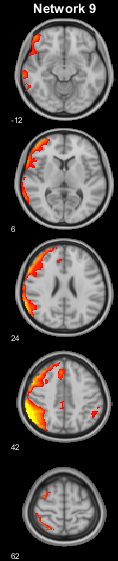
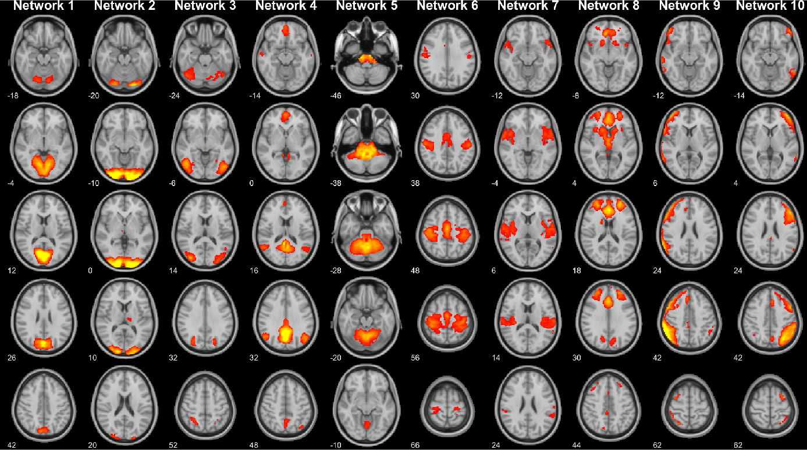

BrainSlicer Demo
Contents
This document demostrates the major functionalities of slicer and slicerCollage using common usage examples. Before jumping into the examples, make sure _slicer_ is in your matlab's path.
Next, we need to retrive the location where example data are stored:
data_folder = [fileparts(which('slicer')),'/examples/data/']; % Also, close open figures, if any: close all
Now, we are ready to start!
TODO: negative values in t-map
Example 1: standard + one-side t-map
Let's start with a very simple figure: just one layer occupied by a standard brain. Layers are specified in the first input to slicer as elements of a cell. You can specify the path to your favourite standard image. However, for your convinience, we have stored some popular FSL standard images (in MNI space) and reserved them handy aliases:
- 0 -> MNI152_T1_0.5mm
- 1 -> MNI152_T1_1mm
- 2 -> MNI152_T1_2mm
- 3 -> MNI152_T1_0.5mm_brain
- 4 -> MNI152_T1_1mm_brain
- 5 -> MNI152_T1_2mm_brain
Thus, to print the FSL's MNI152_T1_2mm image just run:
slicer({2},'output','example_1')
slicer - welcome slicer - coordinates are in mm slicer - printing image: - filename: slicer_example_1.png - resolution: 300 dpi - size: 2008 x 1002 pixels - size: 17.0 x 8.5 cm slicer - end
That's cool, but it's not very helpfull if we don't overlay something interesting. So, let's add a layer with a T-map. Default values won't probably work this time, so we manually specify the t-map limits and the t-map minimum cluster size:
slicer({2,[data_folder,'spmT_0001.nii']},...
'limits',{[],[3.5 6]},... % when a layer's limit is empty, limits will be adjusted automatically
'minClusterSize',{0,50},....
'output','example_1')
slicer - welcome slicer - coordinates are in mm slicer - printing image: - filename: slicer_example_1.png - resolution: 300 dpi - size: 2008 x 1002 pixels - size: 17.0 x 8.5 cm slicer - end
It's already a good starting point, but we can make the figure a little bit fancier. For instance, we don't need the colorbar for the standard image, so we can modify the default behaviour using the property "labels". We can also move the Tmap's colorbar to the east side and add a proper figure title:
slicer({2,[data_folder,'spmT_0001.nii']},...
'limits',{[],[3.5 6]},...
'minClusterSize',{0,50},...
'labels',{[],'T-value'},... % when a layer's label is empty no colorbar will be printed.
'cbLocation','east',... % colorbar location can be south or east
'title','Just a Random T-map',...
'output','example_1')
slicer - welcome slicer - coordinates are in mm slicer - printing image: - filename: slicer_example_1.png - resolution: 300 dpi - size: 2008 x 762 pixels - size: 17.0 x 6.5 cm slicer - end
Wow! We got a prety cool figure, and it's ready for publication! However, depending on your taste you might want to experiment a bit with other options, such as the number of slices:
slicer({2,[data_folder,'spmT_0001.nii']},...
'limits',{[],[3.5 6]},...
'minClusterSize',{0,50},...
'labels',{[],'T-value'},... % when a layer's label is empty no colorbar will be printed.
'cbLocation','east',... % colorbar location can be south or east
'title','Just a Random one-side T-map',...
'mount', [1 8],... % print one row with 8 slices equally spaced
'output','example_1_fancier')
slicer - welcome slicer - coordinates are in mm slicer - printing image: - filename: slicer_example_1_fancier.png - resolution: 300 dpi - size: 2008 x 310 pixels - size: 17.0 x 2.6 cm slicer - end
Or the background color:
slicer({2,[data_folder,'spmT_0001.nii']},...
'limits',{[],[3.5 6]},...
'minClusterSize',{0,50},...
'labels',{[],'T-value'},... % when a layer's label is empty no colorbar will be printed.
'cbLocation','east',... % colorbar location can be south or east
'title','Just a Random one-side T-map',...
'mount', [1 8],... % print one row with 8 slices equally spaced
'colorMode','w',... % two background modalities: black ('k') or white ('w')
'output','example_1_fancier_white')
slicer - welcome slicer - coordinates are in mm slicer - printing image: - filename: slicer_example_1_fancier_white.png - resolution: 300 dpi - size: 2008 x 310 pixels - size: 17.0 x 2.6 cm slicer - end
Example 2: standard + two-side t-map
The previous example printed a one-side t-map on top of a standard image. In the following example we will make a couple of adjustments to print a two-side t-map. The trick consists in adding a third layer with the same t-map but this time with limits for the negative tail.
slicer({2,[data_folder,'spmT_0001.nii'], [data_folder,'spmT_0001.nii']},...
'limits',{[],[-6 -3.5], [3.5 6]},...
'minClusterSize',{0,50,0},...
'labels',{[],'T-value','T-value'},... % when a layer's label is empty no colorbar will be printed.
'cbLocation','east',... % colorbar location can be south or east
'title','Just a Random two-side T-map',...
'mount', [1 8],... % print one row with 8 slices equally spaced
'output','example_2')
slicer - welcome slicer - coordinates are in mm slicer - printing image: - filename: slicer_example_2.png - resolution: 300 dpi - size: 2008 x 310 pixels - size: 17.0 x 2.6 cm slicer - end
Note that we put the negative layer before the positive layer, so to get the negative colorbar below the positive one. We are close to the solution, yet you might have noticed that the default colormaps looks odd (blue for positive values and red for negative values). It's time to tweak the property 'colormaps'. You can get the full list of available colormaps (with associated labels and codes) by running the command:
colormaps
COLORMAPS View or get Slicer's colormaps.
COLORMAPS() shows the available colormaps, which include FSL colormaps
(including the isoluminant Brain Colours maps) and the built-in Matlab's
colormaps. Each map is associated with a unique name and integer.
COLORMAPS(ARG) returns the selected colormap in matrix form (N-by-3)
that can be fed to matlab's colormap function to modify the axes/figure
map. ARG can be either a char/string or a positive integer, so that the
maps can be selected either by name or by number.
See also SLICER, SLICERCOLLAGE
By default, slicer uses 1,2,3 (i.e., grey, red-yellow and blue-lightblue) as the colormaps for the first, seond and third layer, respectively. To invert the color of the second and third layer we have to manually specify the colormaps using the property 'colormaps':
slicer({2,[data_folder,'spmT_0001.nii'], [data_folder,'spmT_0001.nii']},...
'limits',{[],[-6 -3.5], [3.5 6]},...
'minClusterSize',{0,50,0},...
'labels',{[],'T-value','T-value'},... % when a layer's label is empty no colorbar will be printed.
'cbLocation','east',... % colorbar location can be south or east
'title','Just a Random two-side T-map',...
'mount', [1 8],... % print one row with 8 slices equally spaced
'colormaps',{1,3,2},...
'output','example_2')
slicer - welcome slicer - coordinates are in mm slicer - printing image: - filename: slicer_example_2.png - resolution: 300 dpi - size: 2008 x 310 pixels - size: 17.0 x 2.6 cm slicer - end
Example 3: slicerCollage
In this example, we will show you how to combine different figures into a single one using slicerCollage. We will start from scratch combining a two-side t-map with a p-map. This time we will pretend our results were generated using an atlas (AALv2 - 120 regions). Let's start from the two-side t-map figure:
slicer({2,[data_folder,'t-map_1.66.nii'],[data_folder,'t-map_1.66.nii'],[data_folder,'edges_AX_aal2.nii']},...
'limits',{[],[-4 -1.66],[1.6 4],[0 1]},...
'minClusterSize',{0,0,0,0},...
'labels',{[],'T-value','T-value',[]},... % when a layer's label is empty no colorbar will be printed.
'cbLocation','east',... % colorbar location can be south or east
'title','Just a Random T-map',...
'mount', [1 8],... % print one row with 8 slices equally spaced
'colormaps',{1,3,2,64},...
'output','example_3_01')
slicer - welcome slicer - coordinates are in mm slicer - printing image: - filename: slicer_example_3_01.png - resolution: 300 dpi - size: 2008 x 310 pixels - size: 17.0 x 2.6 cm slicer - end
Compared to example 2, we have added a fouth layer containing the edges of the atlas. Since the edge volume is a binary mask, we set the limits to [0 1] and selected one of the colormaps (the 64th) which saturated to a black colour (you can use the function drawAtlasEdges to get the edges of your own atlas). Now, we can work on the second figure: the p-map. P-maps are difficult to display since they range from 0 to 1, with smaller values being more significant than greater values. To overcome this issue, we can set the property 'p-map' to 1. This property will force slicer to display 1-p, so that we can set the limits to something like [0.95 1]:
slicer({2,[data_folder,'p-map.nii'],[data_folder,'edges_AX_aal2.nii']},...
'limits',{[],[0.95 1],[0 1]},...
'minClusterSize',{0,0,0},...
'labels',{[],'1 - P-value',[]},... % when a layer's label is empty no colorbar will be printed.
'cbLocation','east',... % colorbar location can be south or east
'title','Just a Random P-map',...
'mount', [1 8],... % print one row with 8 slices equally spaced
'colormaps',{1,86,64},...
'p-map',{0,1,0},... % specify that the 2nd layer is a p-map (slicer will show 1-p)
'output','example_3_02')
slicer - welcome slicer - coordinates are in mm slicer - printing image: - filename: slicer_example_3_02.png - resolution: 300 dpi - size: 2008 x 310 pixels - size: 17.0 x 2.6 cm slicer - end
We have produced two figures (example_3_01.png and example_3_02.png) one for the t map and one for the p map. To concatenate them in a single figure we can call slicerCollage. If you call slicerCollage without input arguments, it will try to concatenate any slicer_* figure present in the current folder. However, since we have produced quite a few figures we will call slicerCollage with an option specifying the string pattern of the figures we wish to combine:
slicerCollage('wildcard','slicer_example_3_*',... 'output','example_3_combined')
slicerCollage - welcome slicerCollage - looking for images using the pattern: -> ./slicer_example_3_*.png slicerCollage - dime = 1 slicerCollage - order = 1 2 slicerCollage - concatenating images: -> 1(1) slicer_example_3_01.png -> 2(2) slicer_example_3_02.png slicerCollage - end
Example 4: Multi-volume nifti
In this example we will produce a figure displaying the 10 functional networks from Smith2009 (todo:ref). The 10 networks are stacked in the 4th dimension of the nifti file PNAS_Smith09_rsn10.nii. We will produce a slicer figure for each network using the 'volume' property for network selection. We will also take advantage of the 'skip' property for automatically centering the slices around the network:
for l = 1:10 % loop over volumes inside Smith09 slicer({2,[data_folder,'PNAS_Smith09_rsn10.nii']},... 'volume',{1,l},... % for the second layer at each iteration select a different volume 'limits',{[],[4 11]},... 'labels',{[],[]},... % when a layer's label is empty no colorbar will be printed. 'title',['Network ',num2str(l)],... 'skip','2',... % auto center the slices based on layer 2 'mount', [5 1],... % print one column with 5 slices equally spaced 'margins',[0.1 0 0 0],...% add 10% of left-margin to avoid clutter 'size','w22',... % set the width of the figure to 22 mm (2.2 cm) 'output',['example_4_0',num2str(l)]) end
slicer - welcome slicer - WARNING: layer 2 has multiple volumes slicer - selecting volume 1 for layer 2 slicer - coordinates are in mm slicer - printing image: - filename: slicer_example_4_01.png - resolution: 300 dpi - size: 260 x 1449 pixels - size: 2.2 x 12.3 cm slicer - end slicer - welcome slicer - WARNING: layer 2 has multiple volumes slicer - selecting volume 2 for layer 2 slicer - coordinates are in mm slicer - printing image: - filename: slicer_example_4_02.png - resolution: 300 dpi - size: 260 x 1449 pixels - size: 2.2 x 12.3 cm slicer - end slicer - welcome slicer - WARNING: layer 2 has multiple volumes slicer - selecting volume 3 for layer 2 slicer - coordinates are in mm slicer - printing image: - filename: slicer_example_4_03.png - resolution: 300 dpi - size: 260 x 1449 pixels - size: 2.2 x 12.3 cm slicer - end slicer - welcome slicer - WARNING: layer 2 has multiple volumes slicer - selecting volume 4 for layer 2 slicer - coordinates are in mm slicer - printing image: - filename: slicer_example_4_04.png - resolution: 300 dpi - size: 260 x 1449 pixels - size: 2.2 x 12.3 cm slicer - end slicer - welcome slicer - WARNING: layer 2 has multiple volumes slicer - selecting volume 5 for layer 2 slicer - coordinates are in mm slicer - printing image: - filename: slicer_example_4_05.png - resolution: 300 dpi - size: 260 x 1449 pixels - size: 2.2 x 12.3 cm slicer - end slicer - welcome slicer - WARNING: layer 2 has multiple volumes slicer - selecting volume 6 for layer 2 slicer - coordinates are in mm slicer - printing image: - filename: slicer_example_4_06.png - resolution: 300 dpi - size: 260 x 1449 pixels - size: 2.2 x 12.3 cm slicer - end slicer - welcome slicer - WARNING: layer 2 has multiple volumes slicer - selecting volume 7 for layer 2 slicer - coordinates are in mm slicer - printing image: - filename: slicer_example_4_07.png - resolution: 300 dpi - size: 260 x 1449 pixels - size: 2.2 x 12.3 cm slicer - end slicer - welcome slicer - WARNING: layer 2 has multiple volumes slicer - selecting volume 8 for layer 2 slicer - coordinates are in mm slicer - printing image: - filename: slicer_example_4_08.png - resolution: 300 dpi - size: 260 x 1449 pixels - size: 2.2 x 12.3 cm slicer - end slicer - welcome slicer - WARNING: layer 2 has multiple volumes slicer - selecting volume 9 for layer 2 slicer - coordinates are in mm slicer - printing image: - filename: slicer_example_4_09.png - resolution: 300 dpi - size: 260 x 1449 pixels - size: 2.2 x 12.3 cm slicer - end slicer - welcome slicer - WARNING: layer 2 has multiple volumes slicer - selecting volume 10 for layer 2 slicer - coordinates are in mm slicer - printing image: - filename: slicer_example_4_010.png - resolution: 300 dpi - size: 260 x 1449 pixels - size: 2.2 x 12.3 cm slicer - end
Now we can concatenate the 10 figures in single one using slicerCollage. This time we will also specify the figure ordering, since the default list of figure has the 10th network in the second position:
slicerCollage('wildcard','slicer_example_4_*',... 'order',[1 3 4 5 6 7 8 9 10 2],... %change the ordering (otherwise the 10th network would be in 2nd position) 'output','example_4_combined')
slicerCollage - welcome slicerCollage - looking for images using the pattern: -> ./slicer_example_4_*.png slicerCollage - dime = 2 slicerCollage - order = 1 3 4 5 6 7 8 9 10 2 slicerCollage - concatenating images: -> 1(1) slicer_example_4_01.png -> 2(3) slicer_example_4_02.png -> 3(4) slicer_example_4_03.png -> 4(5) slicer_example_4_04.png -> 5(6) slicer_example_4_05.png -> 6(7) slicer_example_4_06.png -> 7(8) slicer_example_4_07.png -> 8(9) slicer_example_4_08.png -> 9(10) slicer_example_4_09.png -> 10(2) slicer_example_4_010.png slicerCollage - end
The .mat file
You might have noticed that each printed figure is accompanied by a slicer*.mat file. The file contains a variable storing all the info necessary to construct the figure, including the path to each image file, limits and minimum cluster sizes. Here is an example of a mat file:
load('slicer_example_3_01.mat')
opt
opt =
struct with fields:
nLayers: 4
img1: 'C:\Users\daniele\Documents\MATLAB\repos\BrainSlicer\examples'
img2: 'C:\Users\daniele\Documents\MATLAB\repos\BrainSlicer\examples\data\t-map_1.66.nii'
img3: 'C:\Users\daniele\Documents\MATLAB\repos\BrainSlicer\examples\data\t-map_1.66.nii'
img4: 'C:\Users\daniele\Documents\MATLAB\repos\BrainSlicer\examples\data\edges_AX_aal2.nii'
limits: {[0 9968] [-4 -1.6600] [1.6000 4] [0 1]}
minClusterSize: {[0] [0] [0] [0]}
colorMaps: {[1] [3] [2] [64]}
labels: {[] 'T-value' 'T-value' []}
opacityLevels: {[1] [1] [1] [1]}
montage: [1×1 struct]
appearance: [1×1 struct]
resolution: '300'
sizePixels: [2008 310]
sizeCm: [17 2.6268]
Figure size, resolution and fontsize
Two properties regulate the resolution and size of the output figure:
% * 'resolution' - Scalar/char indicating the PNG resolution. % Default: 300. % * 'size' - Char. Define the size of the printed figure % by specifing either the figure hight or % the figure width in mm. You cannot specify both % since the aspect ratio is dictated by the % number of slices. E.g.: 'w170' or 'h30' (i.e., % width of 170 mm or hight of 30 mm).
Note that changing the figure size also affects the readability of text elements. If you need to use a very large size (or very small) you might end up with too small (or too large) characters. In this case you can adjust the text fontsize via the following property:
% * 'fontsize' - 3-element vector specifying the fontsize of: % [Title, ColorBarLabel, Coordinates]. % Default: [10 7 6]
There are many other tweakable properties that you can play with. These are illustrated in the help of the slicer function.
cleanup the working directory form output files:
delete('slicer_example_*'); delete('example_*.mat'); delete('example_*.png'); close all